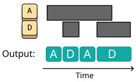
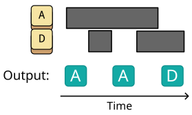

QMK: SOCD Cleaner
Pascal Getreuer, 2024-08-02 (updated 2025-03-09)
⚠ Caution
Check game rules before using. Notably, Counter-Strike does not allow SOCD filtering. It is your responsibility to disable SOCD Cleaner where it is prohibited.
“Remember, a kite rises against, not with, the wind.” — Hamilton Wright Mabie
Overview
SOCD Cleaner is a QMK userspace library for Simultaneous Opposing Cardinal Directions (SOCD) filtering. What this mouthful of a name means is that when two keys of opposing direction are held at the same time, a rule is applied to decide which key is sent to the computer. Such filtering is popular for fast inputs on the WASD keys in gaming. See HitBox’s Introduction to SOCD and Resolutions for a detailed description.

Capabilities of SOCD Cleaner:
- SOCD filtering of any pair of basic keycodes.
- Filtering of multiple key pairs.
- Several SOCD resolution strategies, which are configured per key pair and may be changed at run time.
Motivation and status in QMK core
As of August 2024, SOCD filtering is expected to come soon as a core QMK feature as the Key Cancellation feature in PR 24000 together with a following PR. However, as tzarc’s RFC on Key Cancellation explains, there is both significant interest in this feature and general questions about what’s necessary for real usage patterns with SOCD.
I suggest what’s needed in the interim is a userspace library. SOCD Cleaner provides a solution for users interested in getting SOCD filtering now. It also serves as a test bed for exploring what range of SOCD options fit best for in real use. I’ve tried to keep the code short and simple to make it hopefully approachable for others to hack on.
Add it to your keymap
Prerequisites
- You need a QMK-supported keyboard.
- For source edits described below, you must use a text editor that can edit and save plain text files (there are many such editors, but I’ll suggest Kate editor).
- If you haven’t yet, install QMK on your machine.
I’m also supposing that you have created a keymap under directory location
qmk_firmware/keyboards/keyboard-name/keymaps/keymap-name
I’ll refer to this location as the “keymap folder.”
Step 1: module installation
Install my community
modules. Then enable module getreuer/socd_cleaner
in your keymap.json file. Or if keymap.json
does not exist, create it with the following content:
{
"modules": ["getreuer/socd_cleaner"]
}Step 2: keymap.c changes
Your keymap folder should contain a file called
keymap.c. Edit this file to make the following changes.
After your keymap definition in keymap.c, add:
socd_cleaner_t socd_opposing_pairs[] = {
{{KC_W, KC_S}, SOCD_CLEANER_LAST},
{{KC_A, KC_D}, SOCD_CLEANER_LAST},
};This definition specifies that SOCD filtering will be done on the
WASD keys (referred to by keycodes KC_W, KC_A,
KC_S, KC_D) with last input priority
resolution (SOCD_CLEANER_LAST). If you want to do something
else, this is where to change that.
Step 3: toggling SOCD Cleaner
By default, SOCD Cleaner is enabled globally. Here are two suggestions to control when SOCD Cleaner is enabled. These are mutually exclusive, choose one or the other, not both:
On/off/toggle keys: Use keycodes
SOCDON,SOCDOFF, andSOCDTOGto respectively turn SOCD Cleaner on, off, or toggle its state.Enable on a layer: Add the following in keymap.c to limit SOCD Cleaner to when a specific layer is active, say a
GAMElayer:layer_state_t layer_state_set_user(layer_state_t state) { socd_cleaner_enabled = IS_LAYER_ON_STATE(state, GAME); return state; }
Beware that some games do not allow SOCD filtering, including Counter-Strike. Check game rules before using. Implement one of the suggestions above or a similar means so that you can disable SOCD Cleaner where it is prohibited.
Testing
Flash the firmware
to the keyboard. To test the effect, use the QMK Configurator key tester to
see what key events your keyboard is sending. Repeatedly tapping the
D key while A is held should send
ADADADAD.
SOCD key pairs
Each socd_cleaner_t instance in the
socd_opposing_pairs array is defined by a pair of basic keycodes and a SOCD
resolution strategy (more explanation below). For example, the following
line defines A and D as opposing keys with
SOCD_CLEANER_LAST resolution:
{{KC_A, KC_D}, SOCD_CLEANER_LAST}📝 Note
Define socd_cleaner_t instances as global variables,
outside of process_record_user().
Resolution strategies
Controls vary across games, and there are different SOCD resolution strategies that may be preferred depending on circumstances. The following resolutions are implemented:
SOCD_CLEANER_LAST: (Recommended) Last input priority with reactivation. The last key pressed wins. If the last key is released while the opposing key is still held, the opposing key is reactivated. Rapid alternating inputs can be made. Repeatedly tapping the D key while A is held sendsADADADAD.
SOCD_CLEANER_NEUTRAL: Neutral resolution. When both keys are pressed, they cancel and neither is sent.
SOCD_CLEANER_0_WINS: Key 0 always wins, the first key listed in defining thesocd_cleaner_t. For example, the W key always wins insocd_cleaner_t socd_v = {{KC_W, KC_S}, SOCD_CLEANER_0_WINS};SOCD_CLEANER_1_WINS: Key 1 always wins, the second key listed.SOCD_CLEANER_OFF: SOCD filtering is disabled for this key pair.
If you don’t know what to pick, SOCD_CLEANER_LAST is
recommended.
Dynamic strategy
The resolution strategy on a socd_cleaner_t may be
changed at run time by assigning to its .resolution field.
Supposing GAME1 and GAME2 are custom keycodes,
here is how to switch to a different strategy between games:
bool process_record_user(uint16_t keycode, keyrecord_t* record) {
switch (keycode) {
case GAME1:
if (record->event.pressed) {
socd_opposing_pairs[0].resolution = SOCD_CLEANER_LAST;
socd_opposing_pairs[1].resolution = SOCD_CLEANER_LAST;
}
break;
case GAME2:
if (record->event.pressed) {
socd_opposing_pairs[0].resolution = SOCD_CLEANER_0_WINS;
socd_opposing_pairs[1].resolution = SOCD_CLEANER_NEUTRAL;
}
break;
// Other macros...
}
return true;
}Explanation
If you are interested in the technical details, here is an outline of how SOCD Cleaner processes a key event.
For every key press or release,
process_record_user()is called. In turn,process_socd_cleaner()is called for each SOCD key pair.In each call of
process_socd_cleaner(), the function checks whether the event’s keycode matches a keycode in thesocd_cleaner_t. If not, the function returns early.Otherwise,
socd_cleaner_t.heldis updated to track which keys are physically held. This may generally differ from what keys are being reported to the host computer.If the key opposing the current event is held, SOCD resolution is needed. Following the logic outlined below, we add or remove keys from the current keyboard report.
Suppose that the current event is on key 0 and the opposing key 1 is held (the reverse roles are similar):
SOCD_CLEANER_LASTresolution:- When key 0 is pressed, unregister key 1 and register key 0.
- When key 0 is released, register key 1 and unregister key 0.
SOCD_CLEANER_NEUTRALresolution:- When key 0 is pressed, unregister key 1 (but don’t register key 0).
- When key 0 is released, register key 1 (but don’t unregister key 0).
SOCD_CLEANER_0_WINSresolution:- Same logic as
SOCD_CLEANER_LASTwhile key 1 is held.
- Same logic as
SOCD_CLEANER_1_WINSresolution:- Don’t do anything, key 0 has no effect while key 1 is held.
Acknowledgements
Thank you @Xelus22 for spearheading Key Cancellation in QMK core, and thank you u/Memey-al-la-Creamy for valuable feedback. A thank you to @tzarc, @drashna, @ChristopheL92, @henrebotha, @aldehir, @kqxu1017, and others who contributed to discussion of this topic.